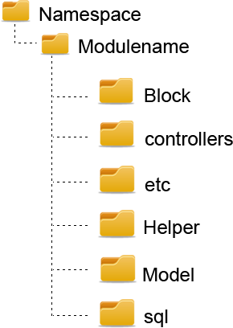

Typical Magento Module structure has the following folders and is based on MVC architecture.

Let’s review all parts of module structure step by step.
Block
This folder liability is View, if we use terms of classical MVC architecture. Blocks coordinate models with the template files. The files in the folder load the data from database and transfer it to the templates in your theme (.phtml files).
Controllers
Controllers represent all business logic actions for the given request (dispatch(), preDispatch(), postDispatch() methods) and delegate commands to other parts of the system.
etc
It contains all xml files that declare and configure behavior of all modules. Each module must have at least config.xml and it’s a right place to declare all models, routers, blocks, helpers, etc.
<config>
<modules>
<Namespace_Modulename>
<version>0.1.0</version>
</Namespace_Modulename>
</modules>
</config>
Optionally this folder could have adminhtml.xml (grant permissions for your tabs/sections in backend menus) and system.xml (creates this new section or specifies where it should be displayed in existing one).
Find more about xml structure here.
Helper
Here you can create methods that would be useful for your store in different ways. Helpers contain utility methods, which are commonly used in the whole system. Methods, declared in helpers, can be called from any template file or block, model, controller class by
Mage::helper('modulename/helpername')->methodName();
Each Module has a default Data Helper class Modulename/Helper/Data.php and we can call it as
Mage::helper('modulename')->methodName();
Model
In classical MVC, Models are used to connect to the database and process the data from and to it. Magento has a different approach, which can be tricky at first look. Here is what they say:
“Most Magento Models can categorized in one of two ways. There’s a basic, ActiveRecord-like/one-object-one-table Model, and there’s also an Entity Attribute Value (EAV) Model. Each Model also gets a Model Collection. Collections are PHP objects used to hold a number of individual Magento Model instances. The Magento team has implemented the PHP Standard Library interfaces of IteratorAggregate and Countable to allow each Model type to have it’s own collection type. If you’re not familiar with the PHP Standard Library, think of Model Collections as arrays that also have methods attached. Magento Models don’t contain any code for connecting to the database. Instead, each Model uses two modelResource classes, (one read, one write), that are used to communicate with the database server (via read and write adapter objects).”
sql
Handles any custom database tables which will be used by the module and process all upgrades to the extension.
etc/modules/Namespace_Modulename.xml
To tell Magento which modules should be used and where they are located, we need to create XML file in the folder, from which it takes all xml files – etc/modules/
<?xml version="1.0"?>
<config>
<modules>
<Namespace_Modulename>
<active>true</active>
<codePool>local</codePool>
</Namespace_Modulename>
</modules>
</config>
You can indicate additional parameters such as depends, version and platform (can be defined in module’s config.xml as well):
Depends
<depends>
<Mage_Catalog />
</depends>
Version
<version>0.1.0</version>
Platform
<platform>сe</platform> <!-- (ce=community edition,pe=professional etc.) -->